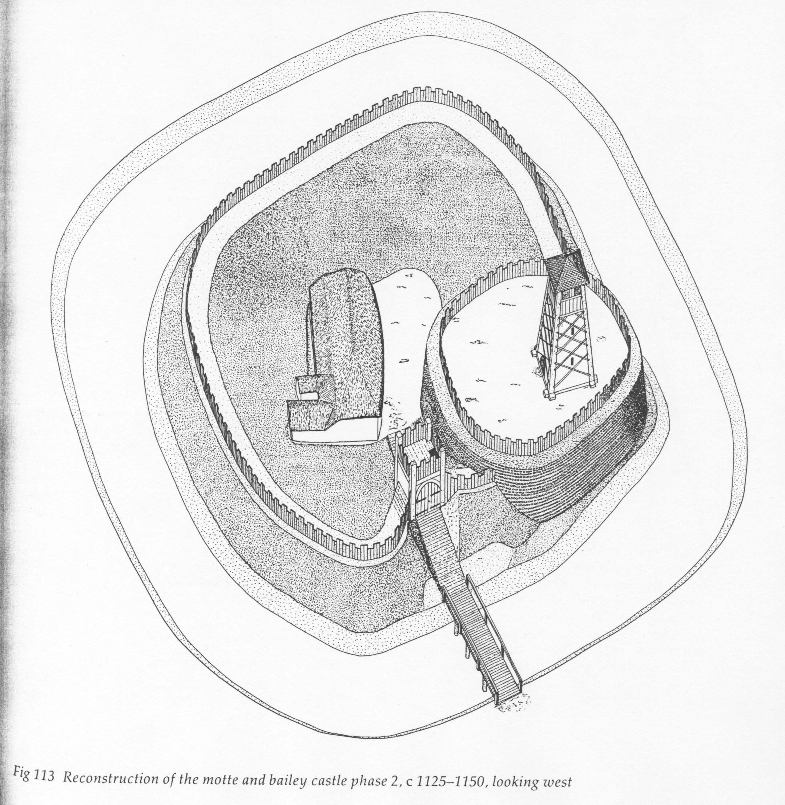
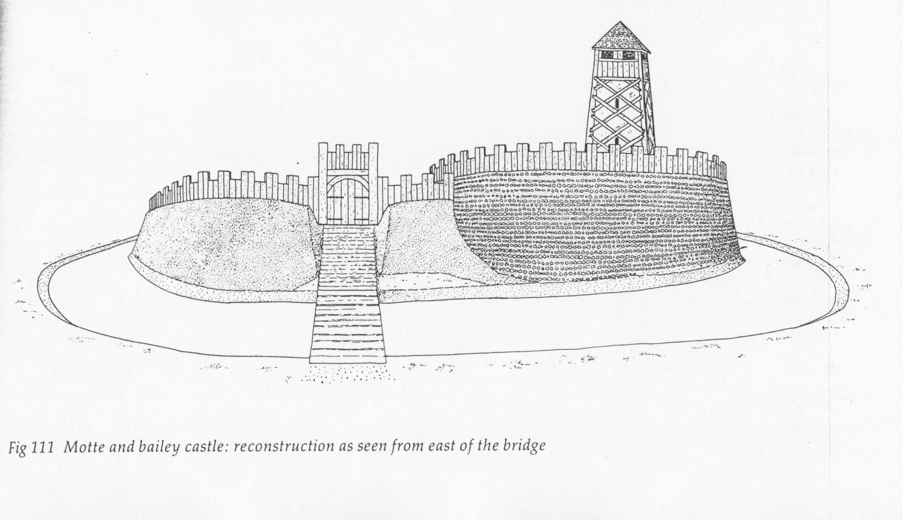
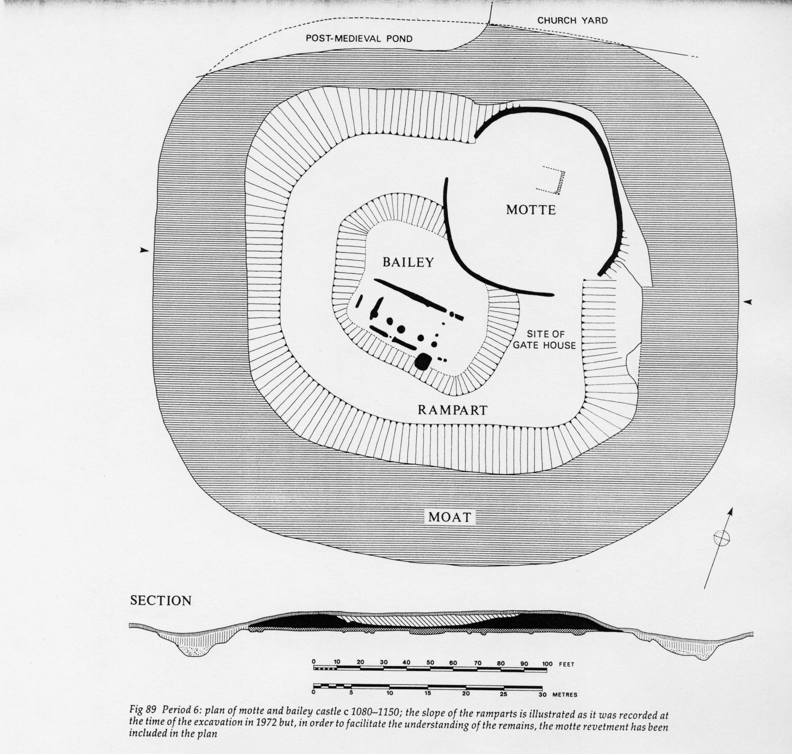
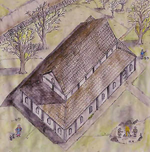
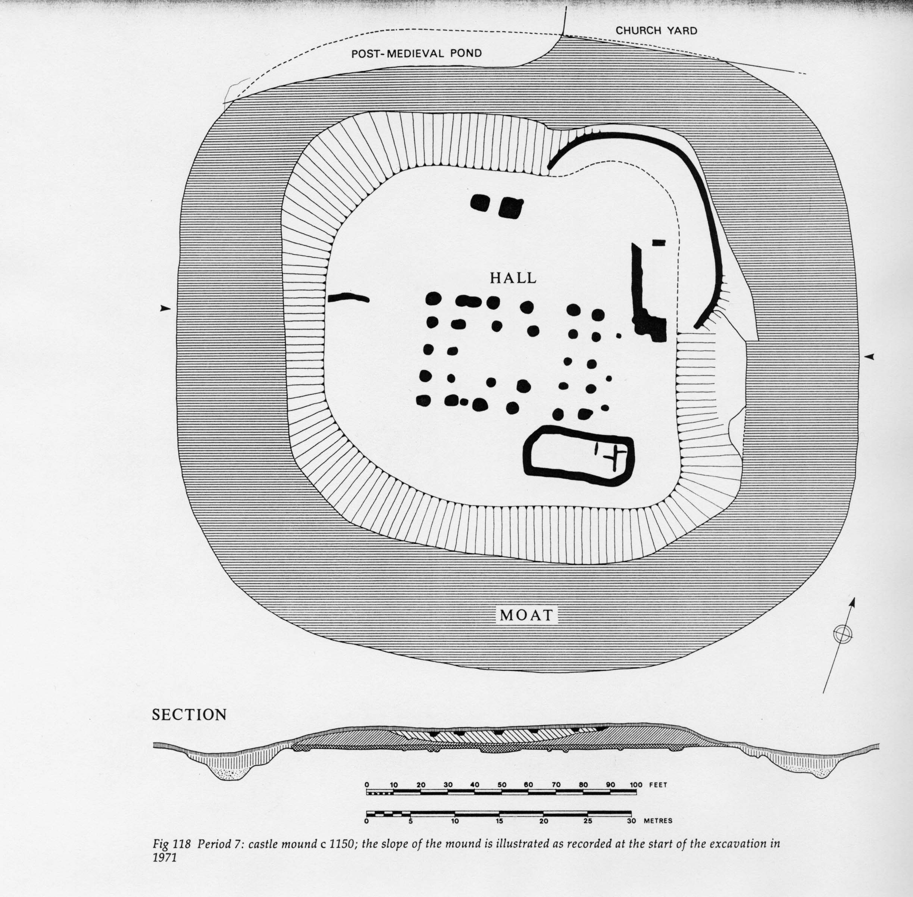

Goltho - the Manor/Castle
As we have seen, in the late Anglo-Saxon period, the village was dominated by a manor enclosure with an embankment, large hall and living quarters, kitchen, weaving sheds, latrine, etc. This was to be drastically modified around 1080, thus after the Norman conquest, presumably by the manor's new owners.
Period 6, c. 1080-1150 Around 1080 a "motte and bailey" castle was built on the manor site. This was the typical type of castle of the period, and consisted of a ditch or moat, around a two-level mound (the motte and bailey), on top of which were a few buildings and a palisade. The castle at Goltho was relatively small, and followed to some extent the Anglo-Saxon manor enclosure, although it was considerably stronger as a fortification. At the top of the mound, there was a relatively small enclosure with one smallish (46 x 20 ft) hall, indicating that it was probably inhabited by a steward or bailiff whose job was to manage the village, rather than by the lord himself. The moat was about 40 ft. wide and 12-15 ft. deep. It is likely, given the nature of the soil, that it would have been full in winter, and would have held at least 6 ft. of water in summer. Remains of the timber footings of the bridges over the moat were found. |
 |
At the top of the mound were found the motte, the fortified area containing a wooden tower (perhaps 30 ft. high), and the bailey, the enclosed area with living quarters of the hall. The hall was subdivided into two rooms, the larger of which contained a hearth and a nave and aisle arrangement.  |
 |
Period 7, c. 1150-1200 Sometime around 1150, a large aisled hall was built in the center of the castle mound, to provide suitable domestic accomodation for a family of considerable prosperity, thus restoring the importance of the Goltho manor to what it had been in the late Anglo-Saxon period. The motte was levelled and the bailey raised to form one large castle mound, and a wooden castle built in the center. The new hall had a central area with aisles all around it, and measured 65 x 41 ft., the largest hall built at Goltho. It was roofed with decorated tiles, fragments of which were found. Remains of a few outbuildings were found, because the edges of the mound had eroded over time. Not many artifacts were found that were associated with this larger hall, and it is assumed that it was not occupied for very long. The current manor house, built in the 16th century, is half a mile to the south, and it is assumed that the Kyme family moved to that location, either because they wanted to build a larger house than would fit in the bailey, or to get farther away from the peasants.  A reconstruction of what the twelfth-century hall might have looked like. |
 |